Votre stream deck.
À votre façon.
Personnalisez vos touches, composez des macros et découvrez des plugins. Tout ce qu’il faut pour faire de votre deck un espace de création, sans le logiciel officiel.
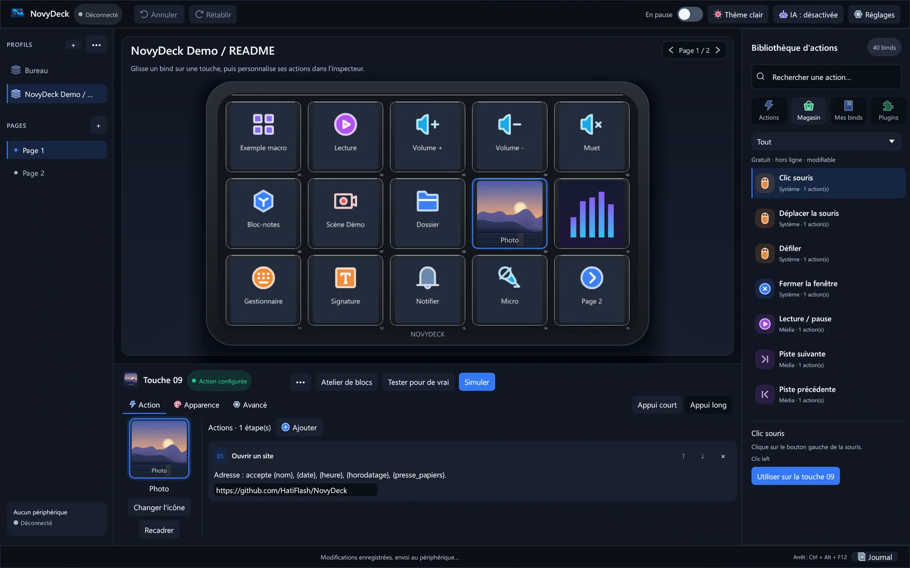
Une touche. Puis tout s’ouvre.
Une interface native pour mettre vos idées sur vos touches. Regardez le deck prendre forme, puis imaginez ce que chaque appui pourrait faire.
Extrait de la vidéo officielle : D6 animé en 3D, captures du logiciel issues de l’application.Une idée sur l’écran. Une action sous le doigt.
NovyDeck vous donne les outils pour organiser votre espace de travail, sans vous imposer la manière de vous en servir.
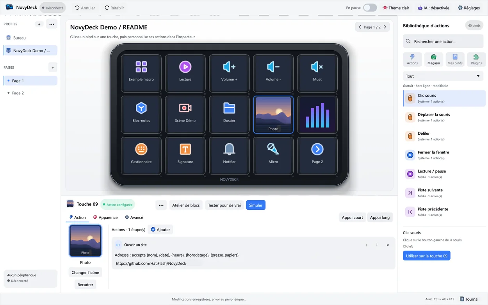
Des touches qui n’appartiennent qu’à vous.
Images, GIF, couleurs ou vidéo courte : composez chaque touche et voyez son rendu avant de l’envoyer sur votre deck.
- Profils, pages et dossiers pour tout organiser
- Changement de profil selon l’application active
- Images ON/OFF distinctes pour les actions compatibles
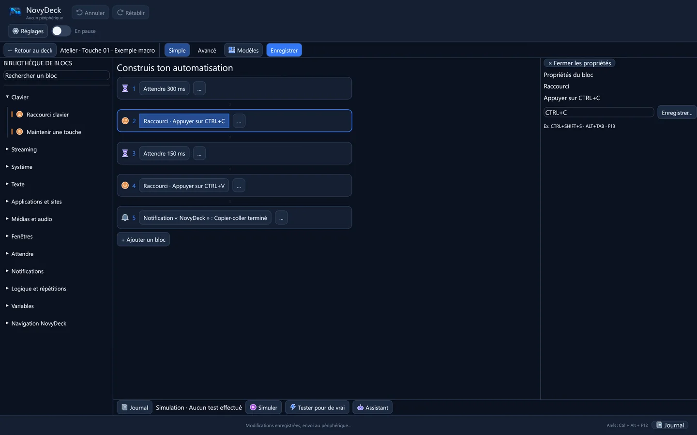
Des actions complexes, sans écrire de script.
Raccourcis, texte, médias, conditions et actions de plugins s’assemblent dans l’Atelier de blocs. Simulez d’abord, exécutez ensuite.
- Actions à l’appui court et à l’appui long
- Simulation avant les commandes réelles
- Assistant local facultatif, désactivé par défaut
Votre deck peut toujours en faire plus.
Découvrez les plugins officiels et communautaires depuis l’application. Consultez les prérequis, installez avec confirmation et mettez à jour sans perdre vos profils ni vos images.
Explorer les plugins sur GitHub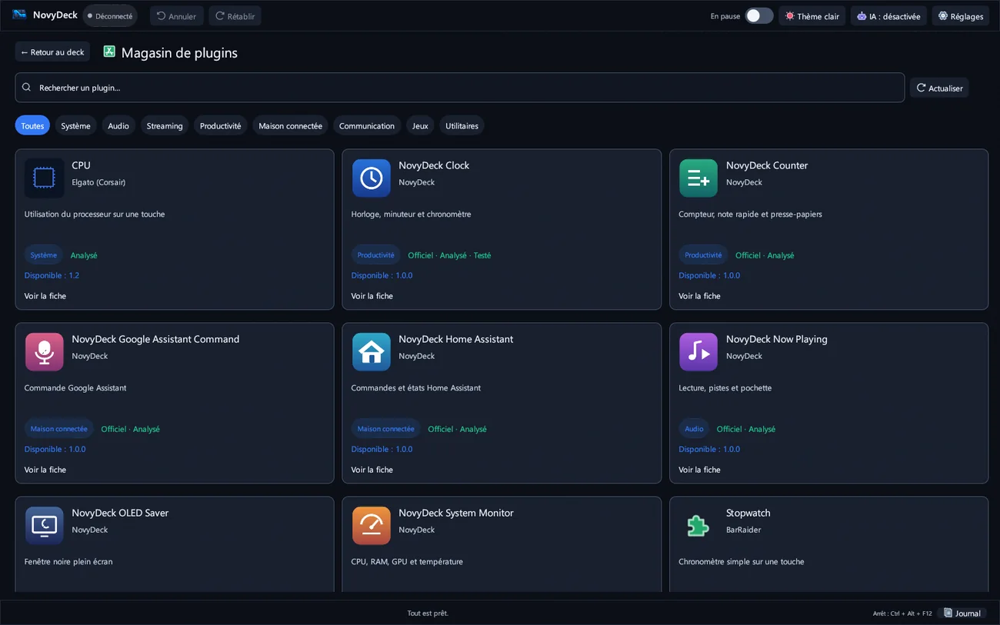
Pensé jusque dans le dernier pixel.
Explorez trois gestes qui changent la manière de créer avec votre deck.

Voyez ce que la touche a fait.
Associez deux images à une touche, ou reliez-la à l’état ON/OFF confirmé par un plugin compatible. Si l’état reste inconnu, NovyDeck n’invente pas une réponse.
Les états transmis dépendent de la version et du comportement du plugin installé.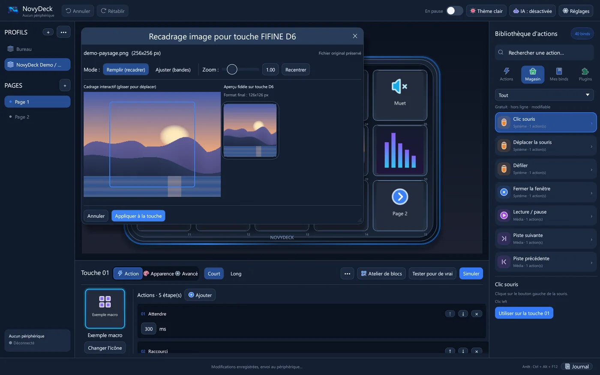
Chaque image trouve sa place.
Recadrez et zoomez vos médias directement dans l’aperçu, sans altérer le fichier d’origine. Images, GIF et vidéos courtes donnent une autre dimension à vos touches.
Le rendu de la capture est celui de l’application, pas une image du périphérique physique.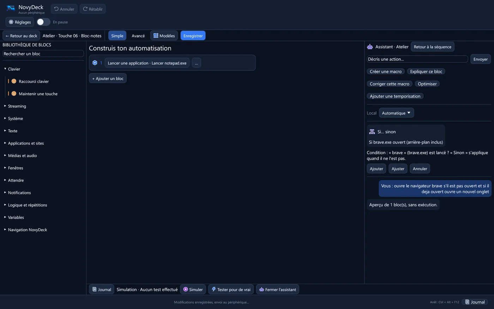
Décrivez l’idée. Gardez la décision.
Une phrase en français ou en anglais peut devenir des blocs proposés en aperçu. Rien n’est inséré sans votre validation ; l’IA locale est facultative et désactivée par défaut.
L’assistant dépend des composants locaux que vous choisissez de configurer.Regardez NovyDeck prendre vie.
Quarante secondes pour découvrir le pavé, les touches et l’interface. Les captures du logiciel sont réelles ; la présentation du D6 est une animation 3D.
Voir la version publiée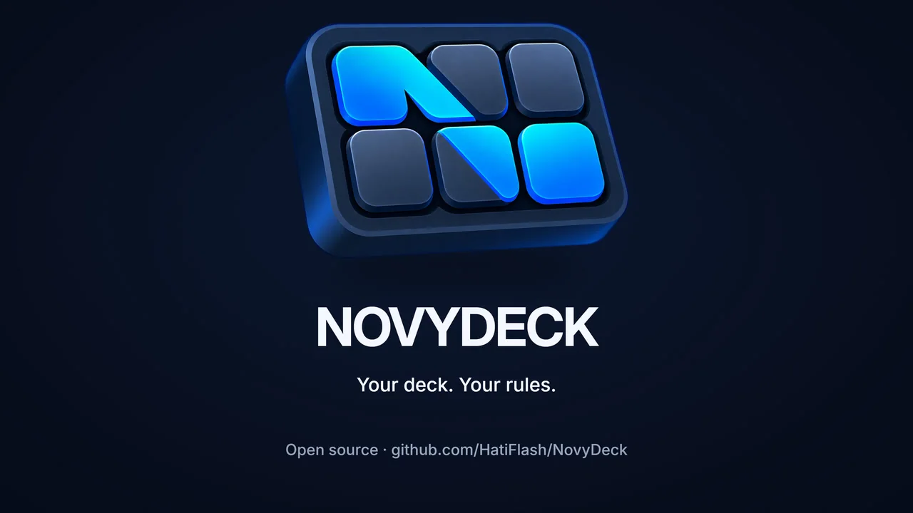
Toute la palette NovyDeck.
Du premier raccourci au deck piloté par des plugins, chaque pièce a sa place. Voici les fonctions qui méritent leur propre lumière.
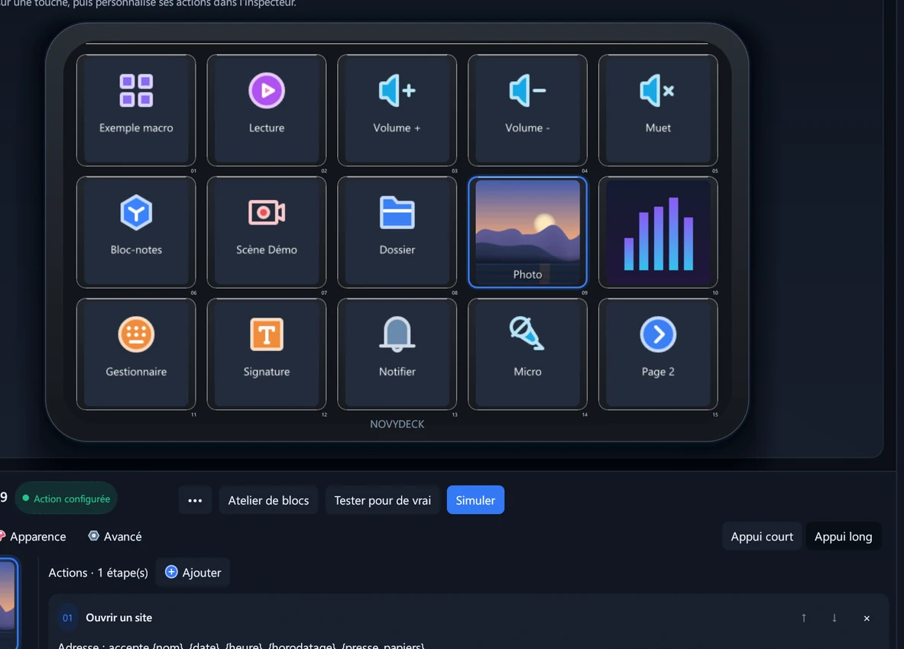
Composer le deck
- Images et mouvementIcônes, GIF et vidéos courtes sur les touches LCD.
- Recadrage fidèleZoomez et déplacez un média sans toucher à l’original.
- Deux façons d’appuyerAction distincte à l’appui court et à l’appui long.
- États ON / OFFImages distinctes, bascule locale ou état confirmé par plugin.
- Profils & pagesDossiers et profils qui peuvent suivre l’application active.
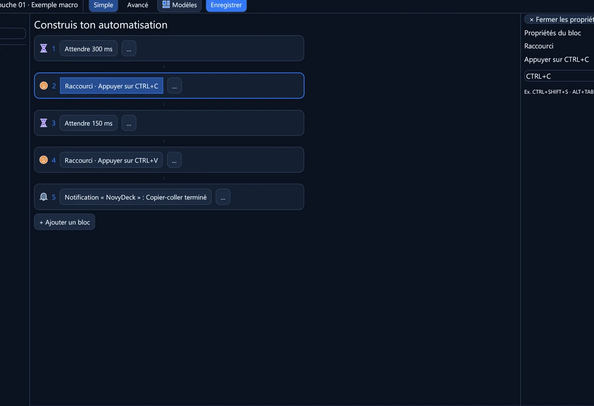
Construire des actions
- Atelier de blocsAssemblez une macro visuellement, sans script.
- Tout en séquenceRaccourcis, texte, applications, médias et fenêtres.
- Logique intégréeConditions, attentes, répétitions et variables.
- Plugins combinésEnchaînez des actions de plugins différents dans une macro.
- Simuler d’abordAperçu et simulation avant l’exécution réelle.
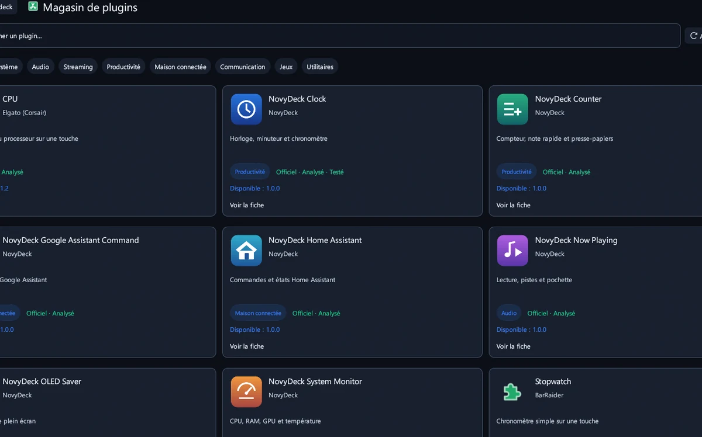
Étendre les possibilités
- Magasin intégréParcourez plugins officiels et communautaires.
- Plugins officielsHorloge, compteur, moniteur, lecture en cours, OLED, Home Assistant et Google Assistant.
- Contrôles d’archiveEmpreinte SHA-256, badges et avertissements visibles.
- Mise à jour prudenteConfirmation, sauvegarde et retour arrière du plugin ciblé.
- Inspecteurs de pluginsRéglages propres à chaque action si le plugin les fournit.
- Import Stream DeckArchives .sdPlugin et .streamDeckPlugin non chiffrées.
- Retrait guidéSignale les touches et blocs liés avant une désinstallation.
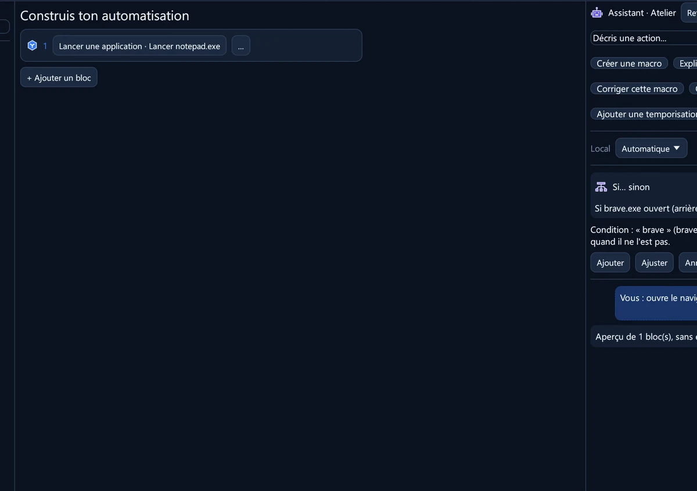
Garder la main
- SauvegardesCopies rotatives et restauration guidée des profils.
- Import ElgatoImport des sauvegardes de profils compatibles.
- MCP avec accordClaude et autres clients compatibles proposent ; vous validez.
- À votre rythmeThèmes, interface FR/EN et démarrage réduit facultatif.
- Un autre deck ?Préparez un rapport matériel anonymisé pour aider à l’adapter.
Pensé pour votre PC. Clair sur le matériel.
Une application Windows native en Rust et egui. NovyDeck a été testé avec le FIFINE AmpliGame D6 et l’Elgato Stream Deck ; les autres modèles ne sont pas encore garantis.
64 bits · installation par utilisateur ou archive portable.
D6 à 15 touches et modèles Elgato Stream Deck testés.
Code source, historique et suivi des problèmes publics.
Prêt à faire vôtre chaque touche ?
Téléchargez l’installateur Windows ou choisissez l’archive portable depuis la dernière version publiée. Vos profils et médias sont conservés lors d’une mise à jour.
Les réponses, sans détour.
NovyDeck est-il gratuit ?
Oui. NovyDeck est un logiciel libre publié sous licence MIT. Son code source est consultable sur GitHub.
Quels decks sont pris en charge ?
Le FIFINE AmpliGame D6 et l’Elgato Stream Deck ont été testés. D’autres decks basés sur Mirabox pourraient fonctionner, mais ne sont pas encore validés.
Mes profils restent-ils après une mise à jour ?
Oui, l’installateur met à jour les exécutables en conservant vos profils, médias et plugins. Pour la version portable, remplacez les exécutables sans supprimer vos fichiers personnels.
Faut-il une connexion ou une IA ?
L’assistant local est facultatif et désactivé par défaut. Le magasin de plugins se connecte après votre accord pour consulter ou installer des plugins. Certaines actions de plugins peuvent dépendre de services tiers.